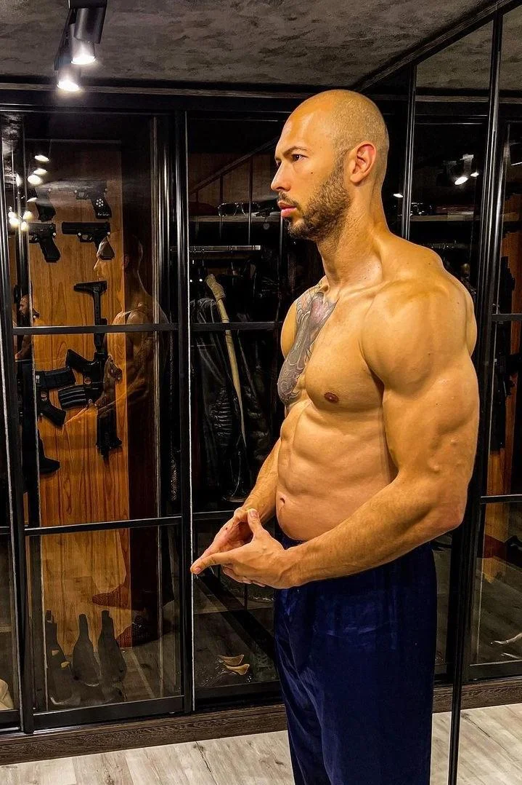

Top G
Pénz
Szuperautók

Dohányzás

Edzés
Nők

Privát repülő
Fegyverek
ÉLD MEG, AMIT ÁLMODSZ
Andrew Tate
Erőfeszítéseket kell tenned, hogy elérd azt az életet, amelyet szeretnél.
Andrew Tate egy vállalkozó és egykori kick-box világbajnok, aki jelenleg egy online tanfolyamot tart a "modern jólét megteremtéséről" a saját "Hustler Egyetemén", és úgy tűnik, a semmiből jött, hogy az írás idején az egyikfelkapottabb emberré váljon. Az interneten a rajzfilmesenkomikusan "nőgyűlölő" nézetei miatt, mint például a „nők nem vezethetnek”, vagy „a 18-19 éves nők vonzóbbak, mint a 25 évesek, mert kevesebb faszon vannak túl." Rajongói a "toxikus férfiasság királyaként" ismerik, Tate hatalmas követőtáborra tett szert (és állandó jövedelemre), mint önsegítő guru, aki tanácsokat ad fiatal férfiaknak, hogyan keressenek pénzt és hogyan beszéljenek nőkkel.